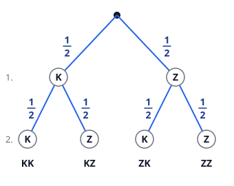
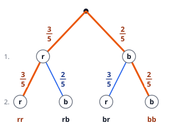
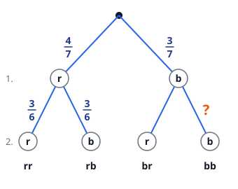

Medienübersicht
Alle Bilder, Audios und Videos dieser App mit ihrer Quelle und ihrer Lizenz.
Bilder

images/wahrscheinlichkeit-wuerfel.svgQuelle: eigene Zeichnung. Lizenz: CC-BY-4.0.Verwendet auf: Ergebnisraum und Laplace-Wahrscheinlichkeit

images/wahrscheinlichkeit-gluecksrad.svgQuelle: eigene Zeichnung. Lizenz: CC-BY-4.0.Verwendet auf: Ergebnisraum und Laplace-Wahrscheinlichkeit, Baumdiagramm

images/wahrscheinlichkeit-urne.svgQuelle: eigene Zeichnung. Lizenz: CC-BY-4.0.Verwendet auf: Ergebnisraum und Laplace-Wahrscheinlichkeit

images/wahrscheinlichkeit-baum-muenze.svgQuelle: eigene Zeichnung. Lizenz: CC-BY-4.0.Verwendet auf: Baumdiagramm

images/wahrscheinlichkeit-baum-urne.svgQuelle: eigene Zeichnung. Lizenz: CC-BY-4.0.Verwendet auf: Baumdiagramm

images/wahrscheinlichkeit-baum-frage.svgQuelle: eigene Zeichnung. Lizenz: CC-BY-4.0.Verwendet auf: Baumdiagramm

images/wahrscheinlichkeit-pfad-urne.svgQuelle: eigene Zeichnung. Lizenz: CC-BY-4.0.Verwendet auf: Pfadregeln

images/wahrscheinlichkeit-baum-gluecksrad.svgQuelle: eigene Zeichnung. Lizenz: CC-BY-4.0.Verwendet auf: Pfadregeln

images/w4-urne-start.svgQuelle: eigene Zeichnung. Lizenz: CC-BY-4.0.Verwendet auf: Ziehen ohne Zurücklegen

images/w4-urne-vorher-nachher.svgQuelle: eigene Zeichnung. Lizenz: CC-BY-4.0.Verwendet auf: Ziehen ohne Zurücklegen

images/w4-baum-ohne.svgQuelle: eigene Zeichnung. Lizenz: CC-BY-4.0.Verwendet auf: Ziehen ohne Zurücklegen, Ereignisse als Pfade, Das Gegenereignis

images/w4-baum-frage.svgQuelle: eigene Zeichnung. Lizenz: CC-BY-4.0.Verwendet auf: Ziehen ohne Zurücklegen

images/w4-gegenereignis.svgQuelle: eigene Zeichnung. Lizenz: CC-BY-4.0.Verwendet auf: Das Gegenereignis